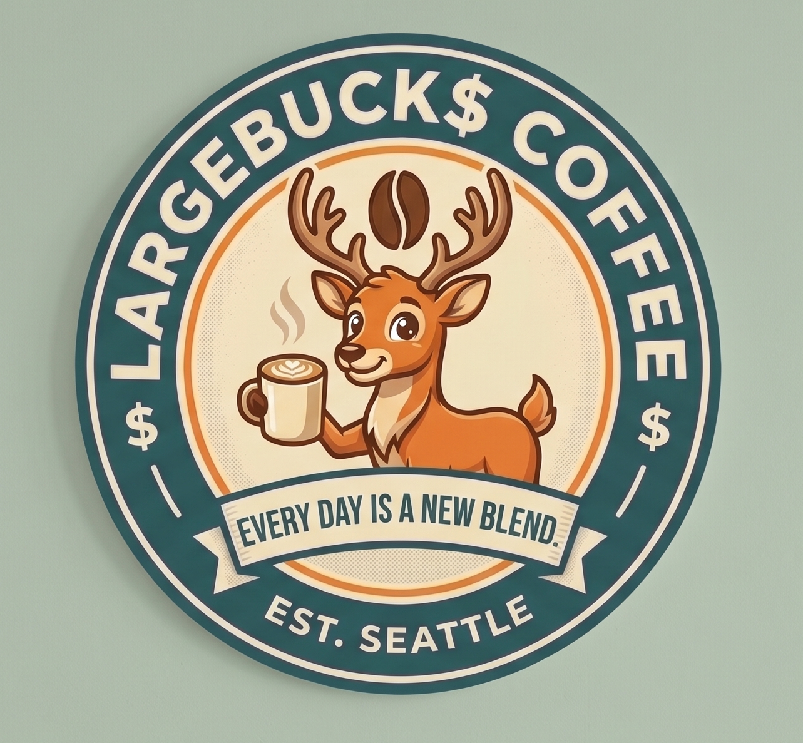
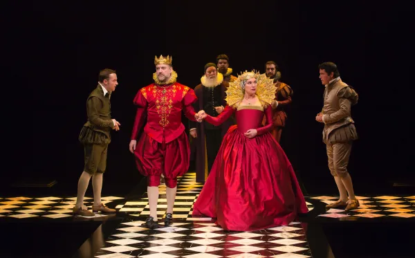
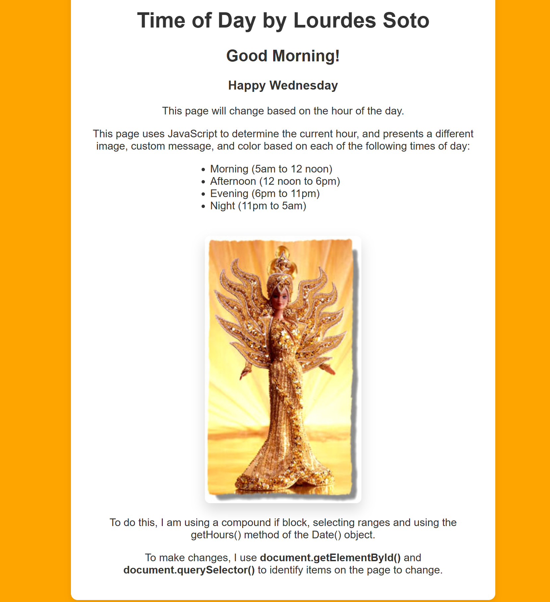

Featured Projects
A portfolio bridging high-level marketing analytics with technical infrastructure.

LargeBuck$ Coffee: Dynamic Daily Specials Interface
A dynamic web application that displays localized daily coffee specials using advanced JavaScript
object data stores and DOM manipulation methods. The application reads user interactions and URL
query strings via the URLSearchParams() object to seamlessly update content, color themes,
and imagery on a single, highly optimized page template.

DOM Play: Interactive Script Rehearsal Application
A dynamic web interface engineered for actors rehearsing Shakespeare's Hamlet. Built using JavaScript and DOM manipulation, the application detects user clicks on individual dialogue lines to dynamically highlight all text spoken by that specific character while seamlessly dimming the rest of the script to improve rehearsal focus.

Dynamic Time of Day Application
An interactive web application built with JavaScript that responds dynamically based on the user's local time of day. This project demonstrates core proficiency in DOM manipulation, front-end logic, and adaptive design to elevate user experience (UX) through personalized, organic interfaces.
Strategic Takeaway: By combining technical tools like HTML, CSS, JavaScript, and repository architectures with global market positioning, I focus on building high-impact platforms that optimize business performance. True value lies in translating technical mechanics into scalable corporate assets.